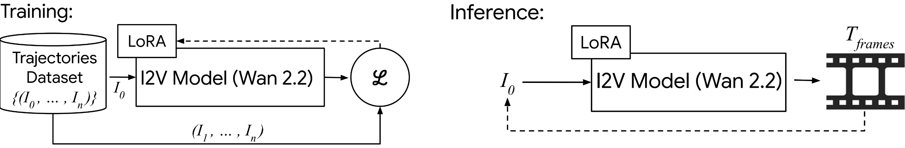

Existing image simplification techniques often rely on Non-Photorealistic Rendering (NPR), transforming photographs into stylized sketches, cartoons, or paintings. While effective at reducing visual complexity, such approaches typically sacrifice photographic realism. In this work, we explore a complementary direction: simplifying images while preserving their photorealistic appearance.
We introduce progressive semantic image simplification, a framework that iteratively reduces scene complexity by removing and inpainting elements in a controlled manner. At each step, the resulting image remains a plausible natural photograph. Our method combines semantic understanding with generative editing, leveraging Vision-Language Models (VLMs) to identify and prioritize elements for removal, and a learned verifier to ensure photorealism and coherence throughout the process. This is implemented via an iterative \emph{Select–Remove–Verify} pipeline that produces high-quality simplification trajectories.
To improve efficiency, we further distill this process into an image-to-video generation model that directly predicts coherent simplification sequences from a single input image. Beyond generating cleaner and more focused compositions, our approach enables applications such as content-aware decluttering, semantic layer decomposition, and interactive editing.
More broadly, our work suggests that simplification through structured content removal can serve as a practical mechanism for guiding visual interpretation within the photorealistic domain, complementing traditional abstraction methods.
Our framework operates in two stages to achieve effective progressive photorealistic Simplification.

We implement an iterative, closed-loop pipeline. A VLM-based Planner identifies scene elements for removal based on semantic rank. The Robust Execution module performs inpainting (Generate, Align, Blend), while a Classifier Edit Verification step ensures the edit preserves photorealism before accepting the result (Ik+1).

We distill these verified trajectories into a feed-forward video generation model. We fine-tune a pre-trained I2V model (Wan 2.2) using LoRA on the dataset of valid trajectories. For visualization purposes, we depict the training objective in pixel space, though the actual fine-tuning is performed in latent space using a diffusion objective. During inference, the model predicts subtractive stop-motion videos from a single input image (I0).
Drag slider for dynamic .
Drag slider for dynamic simplification.
Drag slider for dynamic simplification.
Drag slider for dynamic simplification.
Drag slider for dynamic simplification.
Drag slider for dynamic simplification.
Drag slider for dynamic simplification.
Drag slider for dynamic simplification.
Our framework's core application is exploring a scene's visual hierarchy, effectively transforming a static photograph into a dynamic simplification "slider".


.png)

.png)
.png)
.png)
.png)
.png)


Our approach automatically identifies and removes visual noise, such as power lines, transient crowds, and background litter, without requiring manual masks or user prompts. The model produces clean, aesthetic compositions while strictly preserving the primary subject and scene context.


Our method automatically decomposes the input image into independent semantic layers. Based on visual importance, we isolate the original scene, transient clutter, the primary structure, and the clean background, enabling object-level editing and scene reconstruction.
We thank Gitartha Goswami, Srimon Chatterjee, and Shantanu Bhattacharya for helping define our subtractive simplification taxonomy by tagging object categories and removal orders. We also thank Daniel Winter, Itzhak Garbuz, Yarden Frenkel, Asaf Shul, Barak Meiri, Matan Levy, Sagi Monin, Yakir Yehuda, Tomer Golany, Bar Cavia, Ori Kelner, Yael Pritch, and Alex Rav-Acha for insightful discussions and support that improved this work.
@article{TODO@Rosenthal2026,
Author = {Adi Rosenthal and Dana Berman and Yedid Hoshen and Ariel Shamir},
Title = {Progressive Photorealistic Simplification},
Year = {2026},
Eprint = {arXiv:TODO.TODO},
Doi = {10.TODO/TODO.TODO},
}